Naïl
Three-hit claws, burrowing underground, bursting up, the drill.
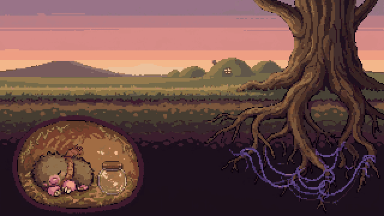
A cute top-down action roguelite
The great tree is withering. Purple threads have spread between its roots. Naïl the baby mole leaves the burrow alone for the first time.
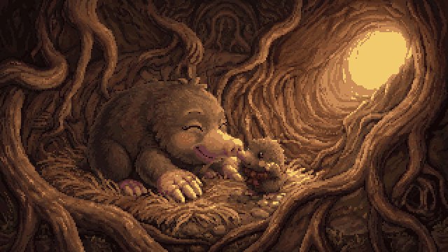
Story
This spring the great tree barely put out any leaves. Purple threads crept along its roots and wrapped the underground folk one by one, turning them against anyone who passes.
Naïl leaves home and follows the roots down with Popo, a raccoon guide. Beat a tangled neighbor and the threads come loose, and they wake up.
Fight
A fighting style only a mole could have. Enemies show where they will strike in red first: the attack lands the moment the fill reaches the border. Parry the lanes, dodge the circles with an X.
Zones
Each zone has its own creatures and its own dangerous ground. Their tricks come from how the real animals live.
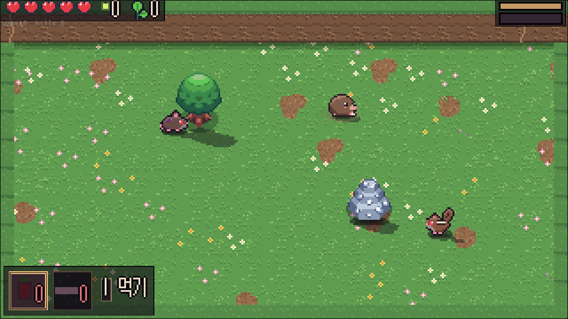
A bright meadow. Swarms of tainted field mice, chipmunks throwing acorns, red squirrels that pounce.
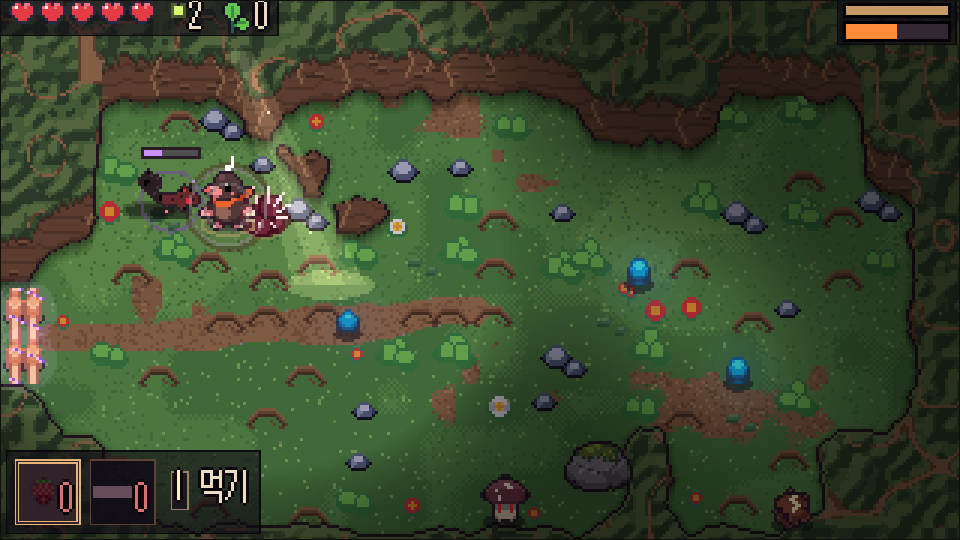
Toads that shoot out their tongues, shrews that bite twice in a row, hedgehogs that curl up and roll. Thorny roots on the floor.
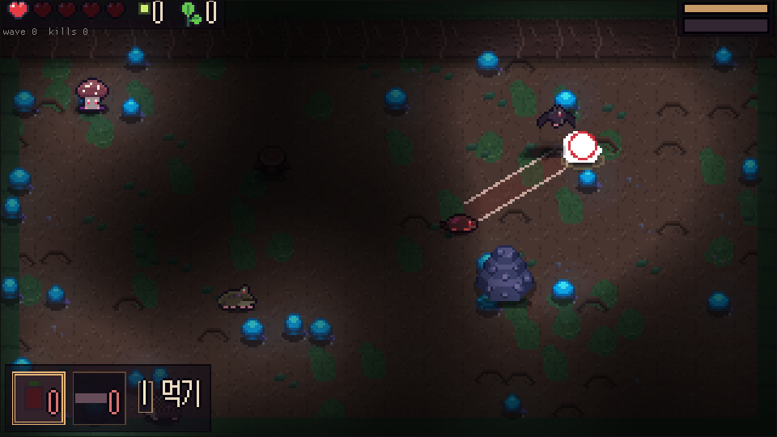
The only light is around Naïl. Bats your burst can't reach, spore caps that puff out clouds, and a ceiling that falls while you fight.
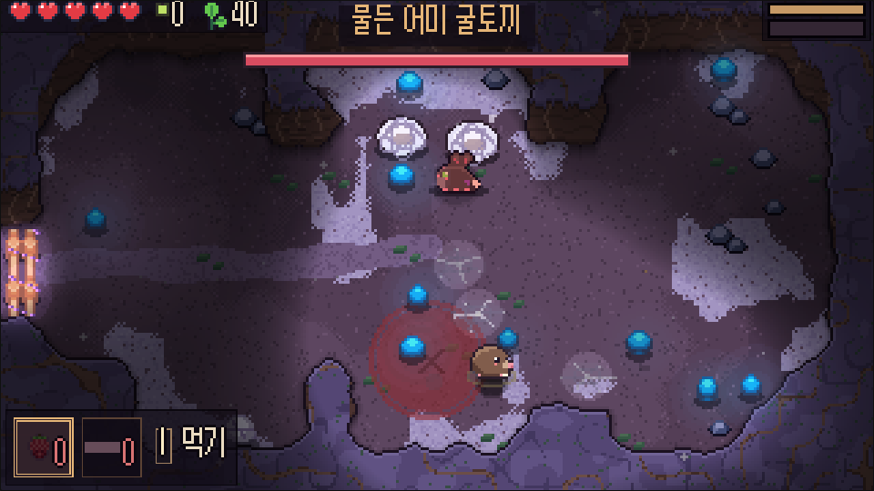
A branch on the third path that opens once Momo is home. Silk webs on the floor hold you in place (cut them with your claws or dig under), and deep inside waits a mother rabbit guarding her babies' cocoons.
On the path map, a Tangle stop holds a strong foe bound tight in thread. Free it for a charm.
Paths · Camps
Open the path map at camp and pick your next burrow. Burrows are dug fresh every time: about six rooms each, with wide two-screen halls and layouts like root pillars, canyons and rubble fields. There are three camps, each with a hidden nook. Past the first camp, every fall winds a root thread. When the third one winds, the run is over and you're back in the village. Glowbugs and seeds you've gathered are never lost when you fall. Head down the root path in the village and you start straight at the path map. Once you've seen an ending, one more way opens at the end of the third path.
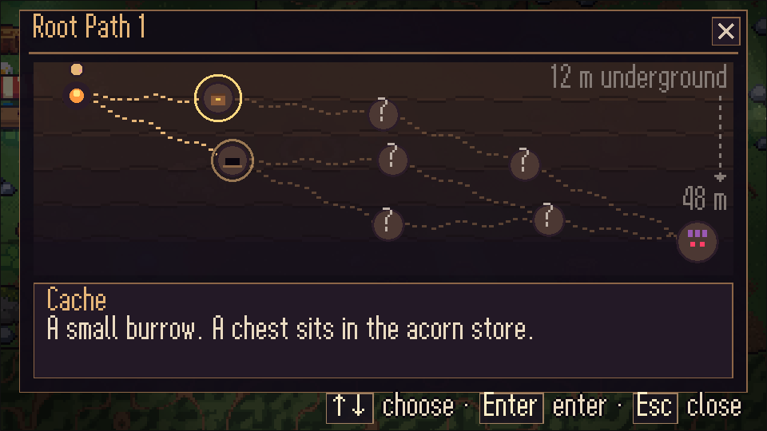
Path map
At every fork you pick the next node. Only the near ones show; the far ones stay ?. A Burrow for seeds, a Nest with tougher packs and a charm chest, a small Cache with a chest, a Spring to heal without a fight, a Tangle with a strong foe wound in thread. Whichever way you go, the Path Keeper waits at the end.
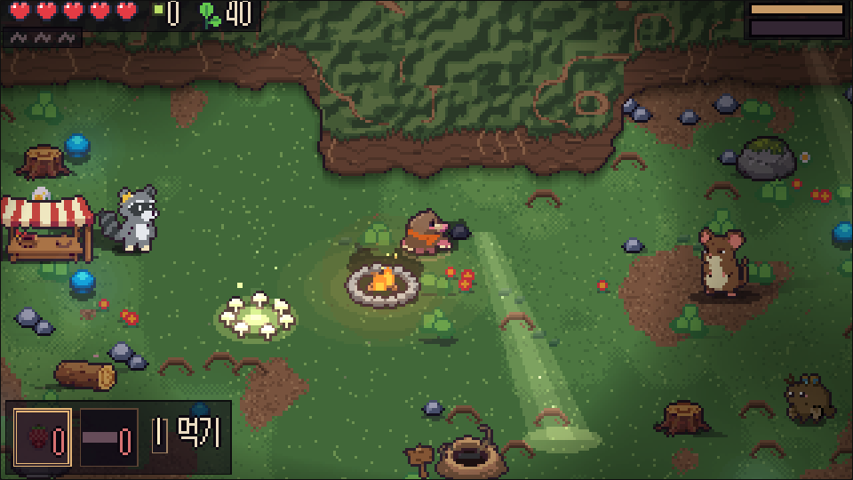
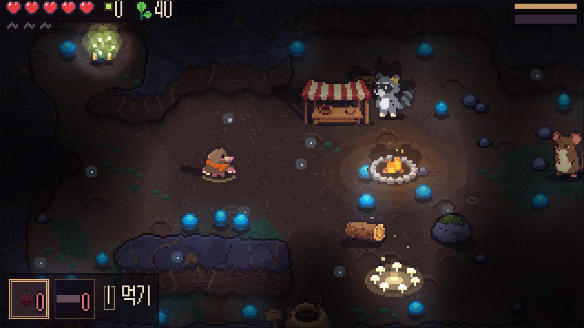
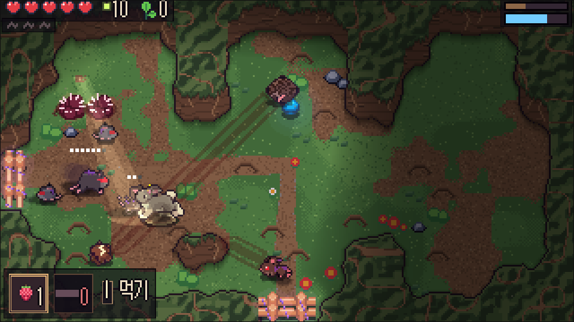
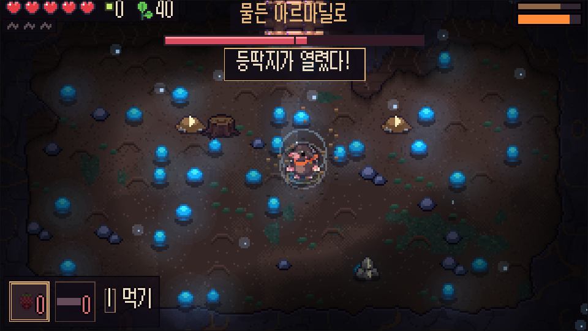
Neighbors
At the end of each path a tangled neighbor blocks the way. Once awake, they settle in the village under the great tree.
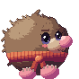
Baby mole
Leaving the burrow alone for the first time. Good with claws and digging.
Raccoon
Your guide, and the shopkeeper at camp. In the village, Popo handles decorations and packs for your next run.
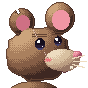
Field mouse chief
The old chief of the field mice, guarding the southern glade.
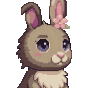
Rabbit
Met three times at the end of the first path. Later, you can take her down yourself.
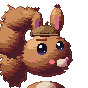
Squirrel
At the tangled roots where the second path ends. Gives up nothing it buried. Help Doto remember, and Doto comes down with you.
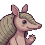
Armadillo
Keeper of the deep door. Curls up so no one can go further down.
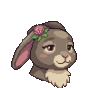
Mother rabbit
Momo's mother. Bound in thread at the back of the old warren, still guarding her babies.
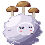
At the very bottom
She has waited a long time at the very bottom. Only those who make it down there learn why.
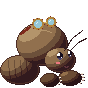
Mole cricket smith
By the stump at the first camp. Makes you Sprout Claws.
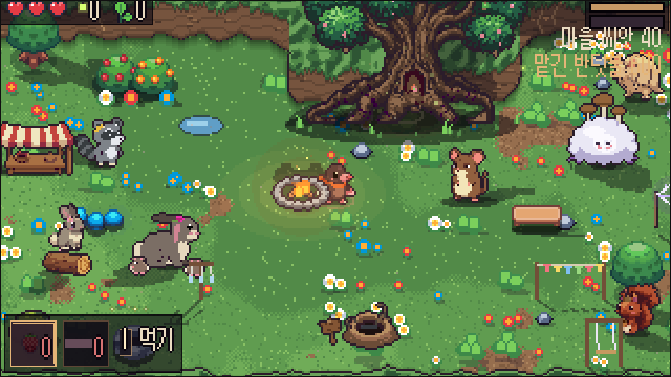
Village
Spend glowbugs to awaken the tree's talents. Talk to Popo to decorate the village with village seeds, pack for your next run, or leaf through the village notes. Glowbugs you bank but don't spend drift over the stone well. Every neighbor who comes home brings new leaves, and in the end, flowers.
Three heroes
Three-hit claws, burrowing underground, bursting up, the drill.
Hind-leg kicks, a hop to dodge, three chained stomps. Hold dodge to run, let go to leap and land on a foe.
Acorns from range: a three-throw combo ending in a fan, a charged big acorn, a high hop back, acorns buried as mines. Throw just as a shot arrives to bat it back. Runs with its tail streaming behind.
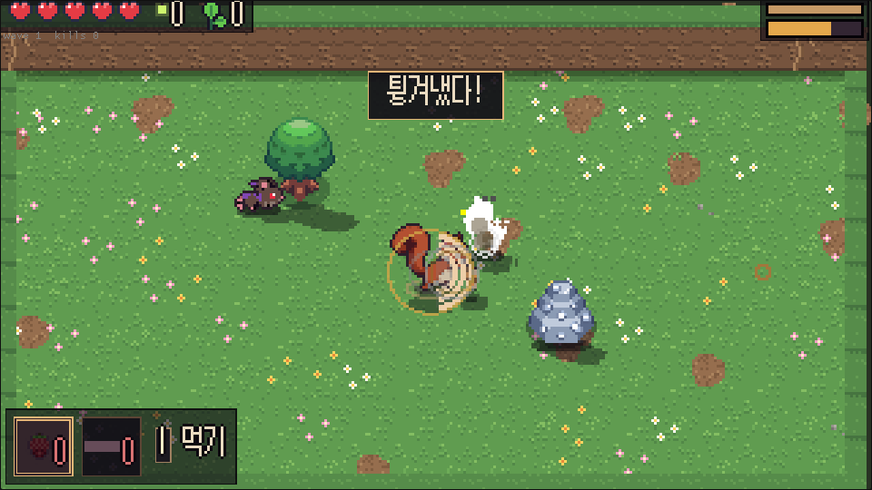
Wake Momo and Doto on their paths and you can pick them on the village root path and take them down. Each hero has their own talents, charms, records and ending lines.
Also inside
Sound
The same place can sound different from run to run. The village trades piano and violin for koto; burrows trade retro chiptune for quiet ambient. The open path and the flower burrow have their own songs, so do the first camp and the last, and when a boss wakes up below half health the music turns with it. Birdsong, dripping water and a low rumble sit under the music, and the music steps back during dialogue and menus.
For everyone
Play
Progress is saved in the browser (web) or on the device (Android, PC).
Runs in desktop and phone browsers. A keyboard or gamepad works best; on phones, use the on-screen buttons in landscape. Add it to your phone's home screen and it opens like an app without the address bar — and after the first visit it works offline too.
nail.apk (arm64) from the releases page.The easiest way is the browser above (in Safari, "Add to Home Screen"). If you want the app, it isn't on the App Store yet, so you install it yourself.
nail-ios.ipa (unsigned) from the releases page.Nail.exe · Nail.app · nail.Files: nail.apk · nail-ios.ipa · nail-windows-release.zip · nail-macos-release.zip · nail-linux-release.tar.gz — release notes · older versions
| Action | Keyboard | Gamepad |
|---|---|---|
| Move | WASD ←↑↓→ | Left stick |
| Attack (3 hits) | J | X |
| Burrow → burst up | K | A |
| Special | L | B |
| Eat / switch item | I / Q E | Y / LB RB |
| Map / menu | M / Esc | Select / Start |
Aim with the right stick. Rebind in Settings → Controls.
Release
On November 10, 2026, Naïl's birthday, the game reached v1.0. Four paths and the deepest place, three playable characters, 11 languages — play now on the web, Android and PC. The Epic Games Store and Steam versions are on their way. Tell us what you think any time via feedback & bug reports.
FAQ
On the web, in that browser; on Android, PC and the iOS app, on the device. There are three save slots. Clearing browser data also clears web progress. On iPhone, a home-screen app keeps its progress separate from Safari.
Yes, in desktop and phone browsers and on Android. It was built with Android handhelds with built-in controls in mind. The sideloaded iOS app supports them too.
Yes. A move stick and buttons appear on screen, though a keyboard or gamepad is the most comfortable.
You learn by falling, but you can turn on "Popo's Cheer" so you take less damage the more you fall. Once it feels easy, raise the challenge with the cat's cradle.
News